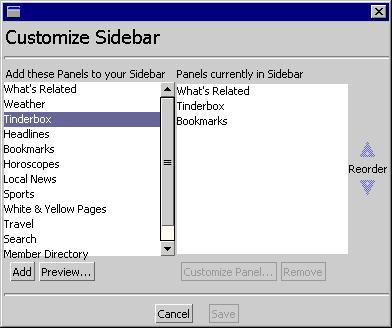

Seamonkey Browser Character Coding Menu UE Specifications
Written by: Katsuhiko Momoi
Last Update: 11/29/99
Discussants: Bob Jung, Kat
Momoi, Erik van der Poel, Catalin
Rotaru, Frank Tang, Michael
Kaply.
Thanks to earlier comments & suggestions by Tague
Griffith & Kathy Brade.
Comments & Suggestions to: Mail: mozilla-i18n@mozilla.org,
Newsgroup: netscape.public.mozilla.i18n
Contents:
- Preliminary Notes
- Character Coding Menu: General Features and Structures.
- Semantics/Definitions of various concepts
- Future To-Do List
- Version History
Note 1: The
following is a revision of my original document based on discussions among
the people listed above. It contains the Browser Character Coding Menu
UI proposals as well as encoding/charset-related issues and future to-do
items. The difference from the earlier versions (1.1 and 1.2) are noted
in the Version History section appended to the end of this document.
Note 2: This document contains
Browser Character Coding Menu UI specifications. It is expected that Editor
and Messenger will share nearly identical menus. Details of the Character
Coding Menus for the other components will come later, however. The menu
specifications described here will supersede any other proposal contained
in earlier documents.
Note 3: The
names "encoding" (and "charset") will be used synonymously in this document
to refer to an individual item listed under the Character Coding Menu.
(Dynamic) Character Coding Menu: General Features:
- Naming:
- Browser & Messenger & Editor will share the same View | Character Coding menu architecture. (Other choices for names are: Character Encoding and Character Code.) Character Coding had strong support expressed in the mozilla-i18n newsgroup.
- Availability of Menu:
- Character Coding Menu will be available on each instance of a Browser window under the View section. It will also be available in each of the frames currently open under View | Frame Character Coding.
- Character Coding Menu should also be available from a Contextual menu on all Windows which have the main View | Character Coding menu and in frames contained within such windows.
- Other windows:
- It is expected that Editor, Messenger and Messenger Compose windows will have both a regular and a contextual menu available.
- What about other windows? Generally speaking, a Character Coding menu should be available for use in all windows where the source data encoding is not in Unicode as required by Mozilla, or where the output encoding must be something other than Unicode used by Mozilla internally. See more in the Future To-Do section.
- Structure of the Menu:
- View | Character Coding menu has a 2-tier structure as illustrated below. (Note: In the Tree View Illustration, "-->" means that it opens to another level of menu.)
- It is expected that average users will be using Tier-1 Menu mostly and that the Tier-2 Menu is targeted more towards advanced international users.
- The Customize Preference dialogs will be available for the items in the Tier-1 menu. It is our hope that average users will not have to use the Preference Dialogs very often. These should be set properly at the installation or shipping time according to the default language choice of the user.
Tree View Illustration:
-
View -->
Character Coding --> (The 1st tier)
Customize ... but only one can have a check mark.
Auto-Detect (Japanese)
Auto-Detect (Korean)
----------------------------------------- (solid line separator)
(Static Menu items) -- no limit to how many Static encoding items can appear here via Customize ... Pref Dialog
Japanese (Shift_JIS)
Japanese (ISO-2022-JP)
Japanese (EUC-JP)
(Encoding History menu items) -- up to 5 items with recent encodings w/ most recent at top.
Western (ISO-8859-1)
Cyrillic (KOI8-R)
Chinese Traditional (Big5)
More ... - -> (The 2nd tier)
(The remaining encoding names listed alphabetically without separators)
Central European (ISO-8859-2)
Central European (Windows-1250)
Central European (MacCE)
.....
.....
....
Menu Illustration of 2-tiers:
1st Tier Menu (View | Character Coding):
| Auto-Detect (Japanese)
Auto-Detect (Korean) |
| Japanese (Shift_JIS)
Japanese (EUC-JP) Japanese (ISO-2022-JP) Western (ISO-8859-1) Cyrillic (KOI8-R) Chinese Traditional (Big5) More ...
|
* There should be a check mark against an Auto-detection module
if the user selected one in the first section.
** There must be a bullet next to the 'determined' encoding
of the current document.
2nd Tier Menu (View | Character Coding | More ...):
** Alphabetical Listing without separators
| .Arabic (ISO-8859-6)
Arabic (Windows-1256) Armenian (ARMSCII-8) Central European (ISO-8859-2) Central European (Windows-1250) Central European (MacCE) etc. ... ... |
** Every new window or frame should have a Character Coding menu consisting of the Tier 1 and Tier 2 menus. See below for details of these menus.
- 1st Tier: View | Character Coding menu:
- Section 1: Auto-Detection module selection. A checkmark is placed on the module being used.
- For the Netscape brand, there will be one Universal auto-detect module selected (=checkmarked), i.e. Auto-Detect (Universal). If there is no Auto-Detect (Universal) available (e.g. Mozilla builds), then we will have other modules on this tier. The final list will depend on availability and effectiveness of existing modules. Currently, the 2 proposed modules for Mozilla are: Auto-Detect (Japanese) and Auto-Detect (Korean). There must be at least one Auto-Detection module for any version of Mozilla. It is hoped that there will be a Universal Detector contributed from the field for the Mozilla releases.
- Customizing Auto-Detect modules list:
- What appears on this 1st tier list will be customizable via a Preference Dialog. See below for more details.
- You can customize to have as many detector modules to appear on the Tier 1 menu as the user prefers but only 1 can be used/effective at a time.
- Module Names: The currently available modules will bear the following names. (Note: the "name" changes from M11.) Future modules should follow this naming convention.
- Auto-Detect (Universal)
- Auto-Detect (Chinese)
- Auto-Detect (Chinese Simplified)
- Auto-Detect (Chinese Traditional)
- Auto-Detect (East Asian) -- covers CJK
- Auto-Detect (Korean)
- Auto-Detect (Japanese)
- Auto-Detect (Russian)
- Auto-Detect (Ukrainian)
- Section 2: a list of the static (customizable) encodings + 5 recent encodings used in the current Browser window.
- There is a line separator between Section 1 and Section 2 of Tier 1 Menu.
- At the top of this section is a list of static/favorite encodings. L10n will customize what encodings should be there for different markets. For the US market, the default will be Western (ISO-8859-1). There must be at least one encoding listed in this section appropriate for the default language of the user. This list should appear in any newly opened browser window. The user can customize this list via Customize Character Coding Menu Preference dialog. (See below for details on the Language-related preferences.) There will be no limit to how many static items can appear on the 1st tier. If there are more than 1 language families chosen via the Customize Preference dialog, the selected encodings will be listed without a separator between the families.
- Next in this section -- without a separator -- is a list of recent encodings (up to 5) used in the current Window context. 5 is the limit of this encoding cache.
- The encoding cache on each new window or frame will refer to one global encoding cache list. Any new window or frame will then update this list as it acquires a new Current Encoding.
- The encoding cache list should be remembered from session to session.
- A bullet indicates that the marked encoding is the Current (Document) Encoding/Charset as determined by Mozilla. The bulleted item could be either in the Static menu section or the Most Recent encodings section. (See below for the meaning of the Current Encoding/Charset and menu-related actions.)
- 2nd Tier: The rest of available encoding items.
- More ...:
- This menu will open to a list of the remaining Character encoding sorted alphabetically without a separator between groups. For example, all Japanese items will precede all Unicode items, etc. The list here will include the entire encodings set minus the Static and Most Recent items. (Note: This will include "User-Defined".)
- We will use the UI names of encodings for sorting. Thus the encodings under the same language or encoding family will cluster together. We have an internal document by Bob Jung which lists the UI names to be used for Mozilla but this is not currently externalized to the public. However, UI names used in M11 Release builds and later under the 6 sub-menus with names like View | Character Set: ISO contain the correct UI names for encodings to be used. Until the latter document is externalized, the reader is referred to the encoding UI names in recent Mozilla builds.
- The menu will include dynamic additions if encoding/charset plugins exist in the CharPlugin directory. See Cata's extensibility model document for details.
- This menu must be scrollable so that the entire list will be visible under all platforms.
- Customize ... Preference Dialogs:
- Both Auto-Detect menu and Static/Most Recent encodings menu will be customizable via Customize ... Preference Dialogs. (In an earlier proposal, these Dialogs were also available from the menus, but they were eliminated in version 1.2 of the proposal.)
- These preference dialogs allow the user to modify/customize the target menu to add or delete items to/from the menu from/to a complete list of encoding/detector items. The dialog window should also allow the user to change the ranking of the target list items.
- The current suggestion for UI is to adopt/adapt the template used in the "Customize" dialog window for the Browser and Messenger sidebar window. This is a re-usable dialog and easily adaptable to our needs. See this Mozilla Customize dialog for Sidebar window for illustration:

Semantics:
- Switching a View | Character Coding Menu selection means ...
- Load/reload existing page/message assuming the source to be in the chosen encoding. We will adhere to this interpretation.
- Current Encoding/Charset:
- The Character Coding menu will always indicate what the correct Current Encoding/Charset is by the use of a bullet. There must be a bullet for every Character Coding menu -- there is no such thing as a document without the Current Encoding marker. Note that in Mozilla, we will no longer treat Auto-Detect modules as one of the encodings. This is because we must ensure that the bullet designates a real encoding -- otherwise, we lose coherence in the meaning of the Current Encoding.
- The determination of the Current Encoding/Charset will be done in the following descending order:
- HTTP Charset (from server/script)
- Document Meta-Charset Tag
- An encoding determined by an Auto-Detector (if one is selected)
- The last Current Encoding/Charset
- Fallback Encoding: (this is the first encoding of the static Character Coding menu list) -- in case none of the above conditions are met, e.g. when the Browser is ** first ** opened to a blank page, or to a page which has no charset info via HTTP protocol, Document Meta Tag or Auto-Detection.
- The above algorithm will not be used when the users surf back to pages already visited. We reply on cached encoding info in such cases.
- The Current Encoding/Charset can be thought of as the Default Encoding/Charset when it is used as the last Current Encoding in determining the present Current Encoding as seen in the above algorithm. Under other circumstances, it is more useful to call the bulleted encoding Current Encoding since that is what the bullet indicates, i.e. the feedback on what Mozilla currently regards as the document encoding. In other cases, Fallback Encoding described below fits the definition of Default Encoding better.
- Auto-Detect modules:
- The Customize.. Preference Dialog will let the user choose as many auto-detect module names to appear on the 1st tier list but only one can be used at a time.
- The current auto-detect module selection will be indicated by a checkmark against the selection. Since Auto-Detect module will apply regardless of what the Current Encoding selection is, it is visually distinguished from the Current Encoding which is marked by a bullet.
- The architecture is such that a new module can be added easily as it becomes available. Documentation will be provided later on how to do this.
- Universal Detection module(s):
- If an effective Universal Detection module for Character Coding is not available, we will ship with at least one Auto-Detect module on the menu. L10n will ship with appropriate language/encoding-specific auto-detect module(s). (See above for the current proposal.)
- If an Universal Detection module becomes available, that should be the default for all language versions. We would still offer other language/encoding detection modules, however, via the Customize Auto-Detect ... Preference Dialog.
- Mozilla builds (as oposed to Netscape-branded builds) will have no Universal Detection module -- as of this writing. This is because our current Universal detection module plan is based on a third-party commercial product. It would be wonderful if someone in the Mozilla community can come up with a universal detection module or two.
- Effectiveness of each module should be determined and ineffective ones should be eliminated from the modules list eventually.
- Fallback Encoding:
- In 4.x versions of Communicator, we had the "default" or "global" encoding set by the "Set Default Encoding" menu.
- In Mozilla, we no longer have this menu setting option, however, we still have the notion of the Fallback Encoding. This is always the first item in the Static Encoding Menu section. This will be used in cases where no encoding determination was made via HTTP charset, HHTP-Equiv meta tag, Auto-Detection, or prior Current Encoding.
- It is expected that the use of Fallback Encoding will be quite limited in Mozilla as opposed to its use in 4.x.
- It is expected that in the Preferences Dialog window, the Fallback Encoding will be indicated by the wording "Default" next to it. See below in Future To Do section for details.
- Charset/Encoding Override:
- The user action of a menu change can also lead to overriding the effect of encoding determination by 1) HTTP Charset from server, 2) Meta-charset info in the document, 3) the result of auto-detection, or 4) prior user selection/fallback of the encoding.
- An override will not persist if a new document is loaded or if the current document is reloaded by Super-Reloading, which will refresh the document by going to the source page again. If the user wants to undo the overrride that has been committed, then the user can super-reload the document.
- An override will persist if a simple reload has been carried out.
- Open Issues:
- Does the Charset/Encoding Override feature affect only the top-level document, or also all frames inside the top document?
- Should we consider putting in a Preference item which controls the Override behavior (suggested by Michael Kaply)? For example, "always honor the document-specified encoding" or "use my encoding selection".
- Inheritance:
- Under 4.x, when a new window is opened, the latter inherits the encoding of the parent window and falls back to the global default only if a prior encoding context is unavailable.
- Under Mozilla, a new window should always go through the determination algorithm listed above and quoted below again. (Note: On a new blank page which has no prior "Current Encoding", the Fallback encoding will become the Current Encoding.)
- HTTP Charset (from server/script)
- Document Meta-Charset Tag
- Auto-Detector (if one is selected)
- The last Current Encoding
- Fallback Encoding: (this is the first encoding of the static Character Coding Menu list) -- in case none of the above conditions are met, i.e. when the browser is ** first ** opened to a blank page, or to a page which has no charset info via HTTP, Document Meta Tag or Auto-Detection.
- Encoding Cache:
- Below the Static/Favorite encodings section of Tier 1 is the list of Most Recent encodings list.
- We will list here 5 most recent encodings which are not on the Static list. The most recently used encoding will be at the top, followed by the next recent one, etc.
- IE5 uses an interesting algorithm to determine to bump off an item from this list in case the limit has been reached. For now, we will use a simple historical approach. List the most recent at the top, the next most recent next, etc.
- For each new window or frame, we will refer to one Global Encoding Cache list and will update it as needed. This will keep our implementation simpler. The 5 most recent encodings list will be stored in prefs.js so that the encoding cache list will be remembered from one Browser session to the next.
- Encoding Cache and Frame(s):
- The main "View | Character Coding" menu will list only the Most Recent encoding cache list of the Main Browser window when the focus is on the Main window. This menu will toggle to become "View | Frame Character Coding" menu when the focus is on a frame.
- For any frame or window, the Static list + Most Recent encodings list can be also obtained via the Contextual menu. (= We need to have the Character Coding menu in the Contextual menu list.)
- There is no need to maintain separate encoding cache lists for the Main window and any frames or new windows. The Most Recent list for a frame, for example, can be created as follows:
- The new frame or window should refer to the Global Encoding Cache list created when the current session has begun. The idea is to add the most recent one to that list (and bump one off from it if necessary) in creating the Most Recent Encodings menu list for the new window or frame.
- The "View | Page Info" will list the encoding info of the Main window when that window is in focus. "View | Frame Info" menu will be usable (via toggle) when the focus is in a frame and will display the encoding of the frame. The Page/Frame Info will also be available via a Contextual menu.
To Do List for future:
- Availability of Character Coding menus in other windows:
- Open issue: In windows other than Browser, Messenger, Composer and Message Compose windows, we might simply offer a contextual menu if such a menu is needed by the criteria stated above.
- Encoding/Charset Cache
- We need to cache the encoding info of a document.
- 5 should be enough for the menu display of most recent encodings used.
- Encoding Cache will be used also for simple Reloading and Page info. We need the cache info for surfing back to prior pages. But for remembering the encodings of the pages visited, 5 is clearly not enough. How long a cache list do we need? How about the entire current session?
- We also need to remember to refresh the encoding cache as we go back to the pages visited.
- Super-reloading (Shift/Opt + Reload) should refresh the cached info and go back to the source document.
- Open issue: Should the Browser, Messenger and Composer use the same Encoding Cache list or should there be a separate one for each major Window category. Character encodings used in Messenger can be different from the ones used in Browser. Thus, there is some argument for keeping them separate.
- History cache may already include encoding info of documents -- may want to check what the current status is. (waterson?)
- Customize .. Character Coding Menu dialog:
- We should exclude certain encoding items from the list in Customize... Character Coding Dialog. These would be encodings such as T.61-8bit, Modified-UTF7-Imap, etc. which may only confuse average users and generally of no use to them. Cf. Bug 15867.
- One way to automatically pick out such encoding names which are used only internally in Mozilla is to affix a prefix such as "ig-" in front of the encodings, e.g. ig-T.61-8bit. ("ig" stands for "ignore".)
- Rather than forcing the user to choose from the entire list of encoding names for the Static Menu list, we should offer just the language or group names. For example, choosing Japanese should add the 3 encodings. Then, the user can further customize this Static list by deleting items or re-arranging the order.
- The Customize... Dialogs for Auto-Detect and Character Coding Menu should be grouped with other language-related preference dialogs . Language preferences should provide for the items listed below, and we should consider having these items grouped under Navigator | Languages or under Languages | as follows:
- Navigator:
- Languages:
- Accept Language Dialog
- Auto-Detect Module Dialog
- Static Encoding Menu Dialog
- and possibly others
- The Customize... Dialog should provide HELP info to guide the user through the selection process. We should assist the TechWriting group by providing appropriate dialog information.
- Option to put the Character Coding menu icon on the Main Tool Bar:
- We might want to have a Preference option to put the Character Coding menu icon on the Main Tool Bar.
- The More... Encoding/Charset listing: 2nd tier list
- Our current decision is that the More .. menu will not be customizable via the Preferences. However, I will note here that some people have suggested that we offer some way to customize this menu via a Preference Dialog.. A number of people have suggested that the rest of the menu is of no use to many users and we should not force them to even look at it. Such arguments point out that the fact that the menu is scrollable should not be a license to create endless list of items.
- One possibility is to create a pref option to not to display the More... Menu.
- Another possibility is to let the user customize this menu via a Preference Dialog.
- The More... menu really should columnize rather than simply scroll.
- The User-Defined menu item will simply be a pass-through encoding. We need to accommodate this by the use of Unicode PUA -- Bug 6588.
- Fallback Encoding:
- This is the first item in the Static Menu list. We should add a wording (Default)automatically after the first item in the Customize... Preferences Dialog list of encodings. (For example, in 4.x we do something similar for the default IMAP server when there are more than 1 IMAP servers selected in the Server Preferences.)
- When the Current Encoding does not accurately reflect the real encoding: It is quite possible that on some documents which have no encoding information via HTTP protocol or document charset tag, we may end up using the prior Current Encoding or the Fallback Encoding as the Current Encoding. Under such conditions, a mismatch can easily occur. For example, when the Current Encoding is marked as Japanese (Shift_JIS) by a bullet, the real encoding may be ASCII. One key in such cases may lie in improving auto-detection routines. Another possible way to alleviate such a problem is to have a font selection routine which assigns a Western font rather than the one selected for Japanese if the document does not have anything but ASCII characters.
- Added Table of Contents.
- Made a number of editorial changes to make the document more understandable to those not used to Netscape-internal discussions.
- Terminology uses: have been unified to Character Coding as the menu name and encoding (and sometimes charset) referring to each menu item or the coding scheme it represents.
- Clarified where generally a Character Coding Menu should be available in Mozilla.
- Added a statement about the importance of the Tier-1 menu and its relationship to the Customize Preference from the user's point of view.
- Clarified issues relating to Univesral Auto-Detection modules for Netscape-branded vs. Mozilla releases.
- Static Encoding list: Added a statement that it must contain at least one item. There cannot be an empty static list.
- More ... Encoding menu: added a statement that it must be (eventually) scrollable.
- Character encoding UI names: A reference to internal document has been removed. It will be added again when it becomes avialable externally.
- The term Charset History has been changed to Encoding Cache to distinguish it from Browser History menu.
- Charset/Encoding Override:
- Added a suggestion to create a Preference based control for the Override behavior.
- Encoding Cache and Frame:
- Clarified that there is only one global encoding list used/updated by all open windows or frames.
- Future To-Do:
- Encoding Cache:
- Added some items to consider for future. There may be some complicated issues here.
- Fallback encoding: Made explicit how to mark the default encoding in the Preferences Dialog for Fallback encoding.
- More ... Encoding menu: Though currently not in our plan, I included suggestions to offer a way to customize the More .. Encoding menu.
- Added a short section on cases when the Current Encoding does not accurately reflect the real encoding of the document.
2 Customize... menus for Auto-Detect modules and Character Encoding list have been eliminated in favor of Customize... Preference Dialogs. Auto-Detect modules: Changed the Auto-Detect modules on tier 1 list to the ones for JPN and Korean. We will try to ship with only the Universal Detection module if one is available. Otherwise, with the JPN and Korean modules (for now). ** Chinese modules may be added if effectiveness becomes acceptable. Defined the module names to be used for the Tier 1 menu. Note the changes from M11. (We might file a bug for this.) The checkmark and difference between a regular charset and an Auto-Detect module name is clarified. (We treated Auto-Detect modules as one of the charsets in 4.x.) Encoding Cache: Will be based on one global list shared by all windows and frames during a current Browser session. Encoding Cache and Frame(s): Added toggle menu item for Mail/Frame windows for "View | (Frame) Character Coding" menus. Contextual menu will also be available from any window currently under focus. Current Charset: algorithm for determining the Current Encoding/Charset has been redefined. It now includes the "last Current Encoding/Charset" as more important than the Fallback Encoding. The Fallback Encoding will be used only as the last resort, i.e. upon starting the Browser for the first time and when no encoding information is available. Clarified that the Current Encoding algorithm applies only to new documents/pages. In cases of going "back" over previously visited pages, we will reply on cached encoding info. the relationship between the term Current Encoding/Charset and the term Default Encoding/Charset is clarified. The latter refer to a role played by the former under a certain context. Fallback Encoding: Clarified what this notion is as compared to its 4.x use. Charset/Encoding Override: Reference to <LANG> attribute has been eliminated since Encoding/Charset Override has no effect on it. 2 open issues have been added under this category: Does the Charset Override feature affect only the top-level document, or also all frames inside the top document? (from Erik) Should Override persist under Super Reloading? Future To-Do list: Clarified Encoding Cache requirements -- simple reload vs. Super-reload. Character Coding menu -- nice to have it on the Main Tool Bar menu. (corrected from "Personal Tool Bar".) More .. Character Coding menu --> dropped a proposal to have a Customize ... menu item. Changed it to a possible Preference Dialog item. Separated out the handling of "User-Defined" as a separate To-Do task for future.